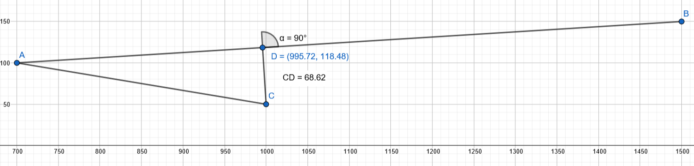

Vektoriprojektio
Vektoriprojektio#
Vektoriprojektio tai vektorin projektio on tärkeä käsite sellaisessa sovelluksissa, joissa etsitään lyhintä etäisyyttä suoralta johonkin pisteeseen. Vektoriprojektio laskemalla saadaan muodostettua projektiovektori. Se on olemassa aina kahden vektorin välillä: voidaan laskea vektorin \(\vec{a}\) projektio vektorille \(\vec{b}\) tai vektorin \(\vec{b}\) projektio vektorille \(\vec{a}\). Ensimmäistä tapausta merkitään \(\vec{a_b}\) ja jälkimmäistä \(\vec{b_a}\).
Seuraavan kuvan avulla voidaan esittää vektoriprojektiolle (tai projektiovektorille) määritelmä: Vektorin \(\vec{a}\) projektio vektorille \(\vec{b}\) eli \(\vec{a_b}\) on vektorin \(\vec{a}\) alkupisteestä alkava vektori, joka on
yhdensuuntainen vektorin \(\vec{b}\) kanssa
pituudeltaan sellainen, että piirtämällä kyseisen projektiovektorin kärjestä kohtisuora vektori päästään vektorin \(\vec{a}\) loppupisteeseen.

Edellisten ehtojen mukaisesti vektoriprojektioon tarvitaan vektori \(\vec{b}\), jota kerrotaan sopivalla kertoimella. Projektio lasketaankin kaavalla \(\vec{a_b}=p\vec{b}\), missä tekijä \(p=\frac{\vec{a}\cdot\vec{b}}{|\vec{b}|}^2\) on nimeltään skalaariprojektio. Skalaariprojektio on se luku, jolla vektori \(\vec{b}\) pitää kertoa, jotta sen kärjestä pääsee suorassa kulmassa vektorin \(\vec{a}\) kärkeen.
Huom! Pistetulon määritelmän mukaisesti \(p=\frac{\vec{a}\cdot \vec{b}}{|\vec{b}|^2} = \frac{|\vec{a}||\vec{b}| \cos{\alpha}}{|b|^2} = \frac{|\vec{a}|}{|\vec{b}|} \cos{\alpha}\).
Tuloksena on siis \(p\vec{b}=|\vec{a}| \cos{\alpha} \frac{\vec{b}}{|\vec{b}|} = |\vec{a}| \cos{\alpha} \cdot \vec{b}^0\), eli \(\vec{b}\):n suuntainen yksikkövektori kerrottuna luvulla \(|\vec{a}|\cos{\alpha}\).
Vektorin projektiota vastaan kohtisuora komponentti \(\vec{a_{\perp}}\) saadaan vähentämällä vektorista sen projektio, siis \(\vec{a_{\perp}}=\vec{a}-\vec{a_b}\). Tämän vektorin pituus on lyhin etäisyys vektorin \(\vec{a}\) kärjen ja vektorin \(\vec{b}\) määrittämän suoran välillä. Ylläoleva kuva auttanee hahmottamaan tämän laskutoimituksen perustelua.
Esim.
a) Laske vektorin \(\vec{a}=4\vec{i}\) projektio vektorille \(\vec{b}=\vec{i}+\vec{j}\).
b) Laske vektoriprojektio \(\vec{a_b}\), kun \(\vec{a}=4\vec{i}-5\vec{j}\) ja \(\vec{b}=-6\vec{i}+2\vec{j}\).
Ratkaisu
a) \(\vec{a_b}=\frac{\vec{a}\cdot \vec{b}}{|\vec{b}|^2} \cdot \vec{b} = \frac{4\cdot 1 + 0\cdot 1}{1^2+1^2} \cdot (\vec{i}+\vec{j}) = \frac{4}{2} (\vec{i}+\vec{j})=2\vec{i}+2\vec{j}\)
b) \(\vec{a_b}= \frac{4\cdot (-6)+(-5)\cdot 2}{(-6)^2+2^2} \cdot (-6 \vec{i}+2\vec{j}) =\frac{-24-10}{40}\cdot (-6 \vec{i}+2\vec{j})\)
\(=-\frac{34}{40} \cdot (-6 \vec{i})-\frac{34}{40} \cdot 2 \vec{j}= \frac{204}{40} \vec{i}-\frac{68}{40} \vec{j} \approx 5.1 \vec{i}-1.7 \vec{j}\)
Esim. Olkoot vektorit \(\vec{A}=8\vec{i}+6\vec{j}-\vec{k}\) ja \(\vec{B}=3\vec{i}-4\vec{j}+2\vec{k}\). Laske
a) vektorin \(\vec{A}\) projektio vektorille \(\vec{B}\).
b) vektorin \(\vec{A}\) vektoria \(\vec{B}\) vastaan kohtisuora komponentti.
Ratkaisu
a) \(\vec{A_B}=\frac{8\cdot 3+6 \cdot (-4)-1\cdot 2\{3^2+(-4)^2+2^2}\cdot (3\vec{i}-4\vec{j}+2\vec{k})\)
\(= \frac{24-24-2}{9+16+4} \cdot (3\vec{i}-4\vec{j}+2\vec{k})=-\frac{2}{29}\cdot(3\vec{i}-4\vec{j}+2\vec{k})\)
\(=-\frac{6}{29} \vec{i}+\frac{8}{29} \vec{j}-\frac{4}{29} \vec{k}\approx -0.207 \vec{i}+0.275\vec{j}-0.138\vec{k}\)
Tarkistus WolframAlphan komennolla: projection[{8,6,-1},{3,-4,2}]
b) \(\vec{A_{\perp}}=\vec{A}-\vec{A_B}=8\vec{i}+6\vec{j}-\vec{k}-(-0.207 \vec{i}+0.275 \vec{j}-0.138 \vec{k})\)
\(= (8+0.207) \vec{i}+(6-0.275) \vec{j}+(-1+0.138) \vec{k}=8.207 \vec{i} +5.725 \vec{j}-0.862 \vec{k}\)
Esim. Jaa vektori \(\vec{a}\) kahteen komponenttiin, joista toinen on vektorin \(\vec{b}\) suuntainen ja toinen sitä vastaan kohtisuorassa, kun vektorit ovat seuraavat:
a) \(\vec{a}=1.5\vec{i}+0.5\vec{j}\) ja \(\vec{b}=2\vec{i}+2\vec{j}\),
b) \(\vec{a}=4\vec{i}+2\vec{j}\) ja \(\vec{b}=2\vec{i}+\vec{j}\).
Ratkaisu
a) \(\vec{a_b}=\frac{1.5\cdot 2+0.5 \cdot 2}{2^2+2^2} \cdot (2 \vec{i}+2 \vec{j})=\frac{4}{8}\cdot (2 \vec{i}+2\vec{j})=\vec{i}+\vec{j}\)
\(\vec{a_{\perp}}=\vec{a}-\vec{a_b}=1.5 \vec{i}+0.5\vec{j}-(\vec{i}+\vec{j})=1.5\vec{i}+0.5\vec{j}-\vec{i}-\vec{j}=0.5\vec{i}-0.5\vec{j}\)
b) \(\vec{a_b}=\frac{4\cdot 2+2\cdot 1}{2^2+1^2}\cdot (2\vec{i}+\vec{j})=\frac{10}{5} \cdot (2\vec{i}+\vec{j})=4\vec{i}+2\vec{j}\)
\(\vec{a_{\perp}}=\vec{a}-\vec{a_b}=4\vec{i}+2\vec{j}-(4\vec{i}+2\vec{j})=0\vec{i}+0\vec{j}\)
Miksi kohtisuoraa komponenttia ei ole olemassa? Huomataan, että vektori \(\vec{b}\) saadaan kertomalla vektori \(\vec{a}\) luvulla \(\frac{1}{2}\). Vektorit ovat siis samansuuntaisia.
Esim. Joki virtaa pisteestä \(A=(700,100)\) suoraan pisteeseen \(B=(1500,150)\). Joen vieressä pisteessä \(C=(1000,50)\) on talo, josta halutaan tehdä lyhin mahdollinen polku joen rantaan pisteeseen \(D\). Kuinka pitkä on kyseinen polku?

Ratkaisu
Muodostetaan aluksi pisteiden väliset vektorit:
Jokea kuvaava vektori on \(\vec{AB}=(1500-700,150-100) = (800,50) = 800 \vec{i} + 50\vec{j}\)
Joen alkupisteestä talolle vie vektori \(\vec{AC}=(1000-700,50-100) = (300,-50) = 300\vec{i} – 50\vec{j}\)
Lyhimmän reitin löytämiseksi on laskettava vektorin \(\vec{AC}\) projektio vektorille \(\vec{AB}\), jonka jälkeen saadaan vektoria \(\vec{AB}\) vastaan kohtisuora vektori \(\vec{DC}\).
Skalaariprojektio on \(p=\frac{\vec{AC}\cdot \vec{AB}}{|\vec{AB}|^2} = \frac{800\cdot 300-50\cdot 50}{800^2+50^2} \approx 0.37\).
Projektiovektori on
\(\vec{AC_{AB}}=p\vec{AB}=0.37\cdot 800 \vec{i}+0.37\cdot 50\vec{j}=296 \vec{i}+18.5 \vec{j}\).
Polkua kuvaava vektori on
\(\vec{CD}=\vec{AC}-\vec{AC_{AB}}=(300-296) \vec{i}+(-50-18.5) \vec{j} = 4 \vec{i}-68.5 \vec{j}\).
Polun pituudeksi saadaan \(|\vec{CD}|=\sqrt{4^2+(-68.5^2} \approx 68.6\).